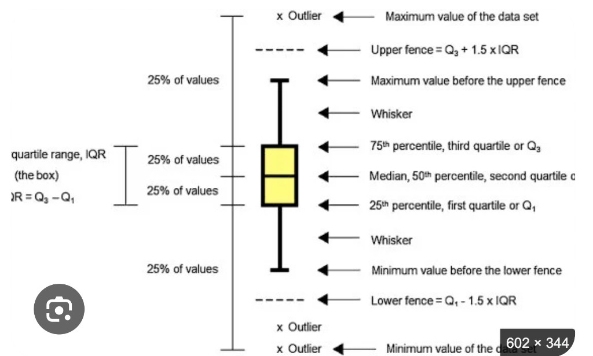
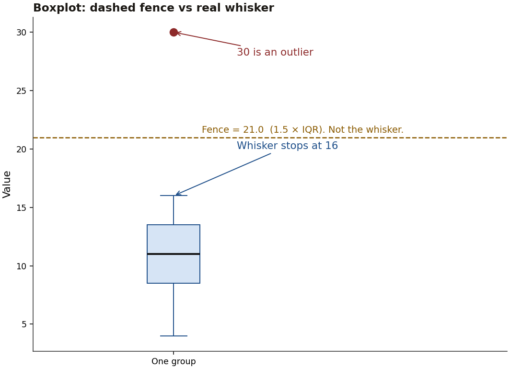
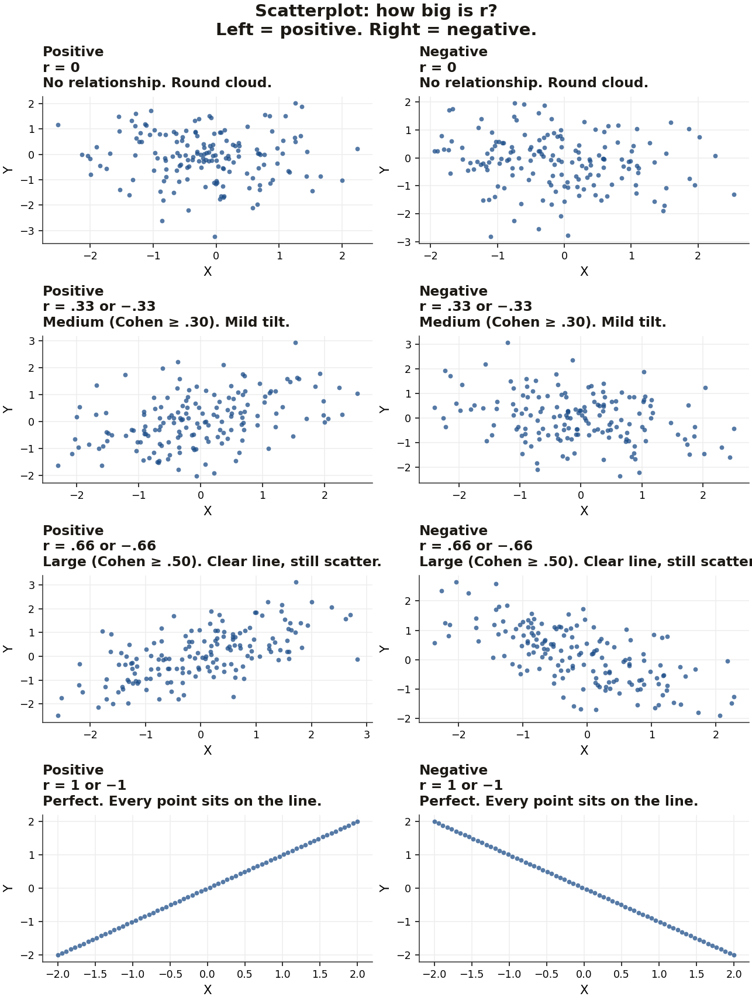
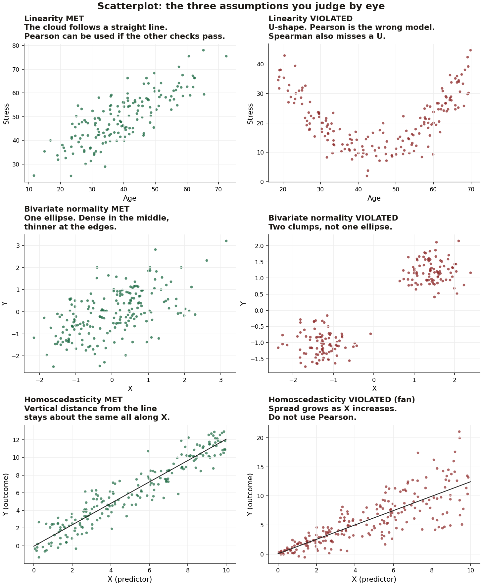
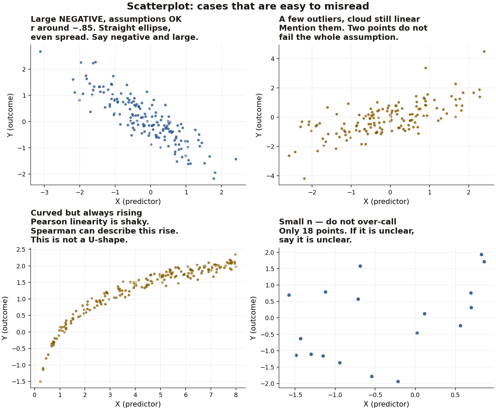
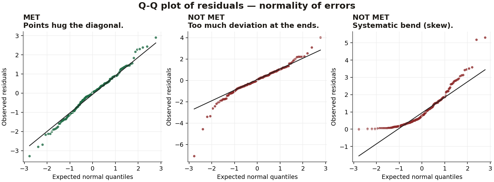
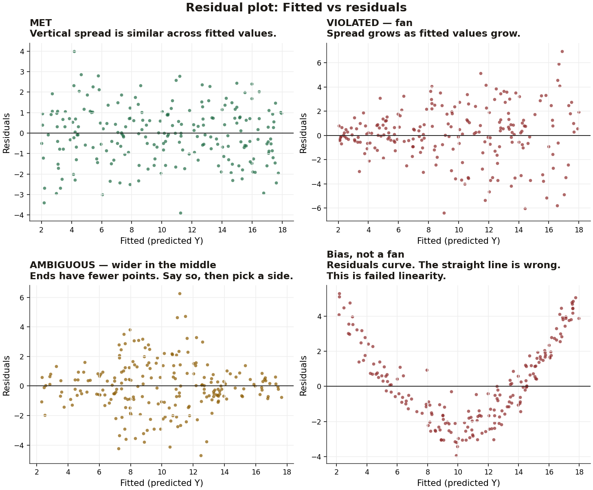

On the day — scenario, test, numbers, interpretation
You get one dataset and several scenarios. Each scenario is three decisions: which analysis, which statistics to report, how to interpret them. Design picks the test. The output picks the row you are allowed to quote. α = .05 unless a question says otherwise.
Step 1 — which analysis
| The scenario says | Run this | Do not run |
|---|---|---|
| Describe the scores, or “plot the distribution” | Descriptives, histogram, boxplot, Q-Q | A hypothesis test, unless they also ask whether groups differ |
| Two continuous variables, “is there a relationship?” | Pearson correlation | A t-test. A t-test compares means. It does not relate two scores. |
| Same question, but “after controlling for” a third variable | Partial correlation, and the simple correlation first | Semi-partial, unless they say “unique contribution” or “remove Z from only one variable” |
| “Unique association” / semi-partial / part correlation | Semi-partial. Say which variable Z was removed from | Calling it partial. The two off-diagonal cells can differ. |
| Two groups, different people, one continuous outcome | Independent-samples t | ANOVA. Paired t. Correlation. |
| Same people, two times or two conditions | Paired t | Independent t. There is no grouping variable and no Levene. |
| Three or more groups, different people | One-way independent ANOVA, then post hoc | A stack of t-tests. Three groups already make the Type I error 14.26%. |
| Same people, three or more conditions | Repeated-measures ANOVA, then Holm | Paired t on every pair. Independent ANOVA. |
Gender, drug, and tutor are grouping variables when they split people into groups. A grouping variable is the independent variable only if the study manipulated it. The outcome always goes in Dependent Variable. An ID column is never an analysis variable.
Step 2 — the p rule, then the size rule
p decides whether you reject H0. Effect size decides how big the result is. They are separate sentences.
| What jamovi shows | What you write | What you must not write |
|---|---|---|
| p < .05 | Significant. Reject H0. That gives some support to the alternative, not proof. | “Proved”, “caused” (unless the design is an experiment and you are careful), “important”. |
| p > .05, including .051, .058, .150 | Not significant. Fail to reject H0. | “There is no difference” or “there is no relationship”. Absence of significance is not evidence of absence. |
| p printed as < .001 | p < .001 | p = .000 or p = 0 |
| 95% CI for a mean difference includes 0 | Agrees with a non-significant t | Quoting a CI from the other t row (Student vs Welch) |
| 95% CI excludes 0 | Agrees with a significant t. The sign must match which mean is higher. | A direction that contradicts the means |
Class case you will be asked in this form: sleep and attention, N = 100, r = .35, p = .051. Medium relationship. At α = .05 you do not reject H0. You still report the medium effect. .049 and .051 are not different kinds of science. Significance is not importance.
Cohen’s d (mean difference in SD units). Guidelines, not laws. Slides: 0.2 small, 0.5 medium, 0.8 large.
| |d| | Say this |
|---|---|
| Below 0.2 | Smaller than the small benchmark |
| 0.2 | Small |
| Between 0.2 and 0.5 | Between small and medium |
| 0.5 | Medium |
| Between 0.5 and 0.8 | Between medium and large. Class grades: d = .74 is this band. |
| 0.8 or above | Large. Class paired test: d = 1.45 is large. |
Use the absolute value for the size word. The sign, or the two means, gives the direction.
Pearson’s r. Size uses |r|. Sign is a separate word (positive or negative).
| |r| | Say this |
|---|---|
| Below .10 | Below the small benchmark |
| ≥ .10 and below .30 | Small |
| ≥ .30 and below .50 | Medium. r = .35 is medium. |
| ≥ .50 | Large. .63, .90, .57, .664, and .618 are all large. |
η² and partial η² have no small / medium / large cutoff in this course. Report the proportion. η² = 0.71 means the grouping variable explains 71% of the outcome variance. Partial η² is the RM one, because it ignores between-person variance. In a one-way RM, η² and generalised η² print the same number. Still name partial η².
Step 3 — which row you are allowed to quote
| Check | p > .05 | p < .05 |
|---|---|---|
| Levene (independent t or independent ANOVA) | Equal variances. Quote Student’s t, or the ordinary ANOVA. Post hoc: LSD if the ANOVA is significant and there are at most 3 groups. Tukey if more groups or you want the correction. | Unequal variances. Quote Welch’s t, or Welch’s F. Post hoc: Games–Howell. Not Tukey. Not LSD. |
| Shapiro–Wilk | Does not by itself prove normality. Prefer the Q-Q plot. | Flags non-normality, and it over-calls. Do not change test on Shapiro alone. If the Q-Q bends, say normality was not met. |
| Mauchly (RM ANOVA) | Sphericity met. Quote the uncorrected F. | Sphericity violated. Read ε. ε > .75 → Huynh–Feldt row. ε ≤ .75 → Greenhouse–Geisser row. Copy df from that row. |
| Omnibus F | Stop. Do not hunt for a winning pair. Write that the groups / conditions did not differ significantly. | Then post hoc. A significant F can still have every pair p > .05. Report that. Do not invent a winner. |
| Each post hoc pair | Those two do not differ significantly. | Those two differ. Name who is higher from the means. |
Pearson assumptions are pictures, not a p-value. Straight cloud → linearity. One ellipse → bivariate normality. Even residual spread → homoscedasticity. Fan → heteroscedasticity, switch to Spearman or Kendall and say why. U-shape is a failed straight line. Spearman does not fix a U. Ambiguous residual plot: say it is ambiguous, pick a side, give the reason.
After a partial correlation, compare with the simple r. Weaker but still significant → partial confounder. No longer significant → confounder. Stronger → suppressor. Sign flips → negative suppressor.
What to report, by test
| Test | Copy these, in this order |
|---|---|
| Descriptives | N, mean, SD. Median if the mean is pulled by skew. Name the plot feature they asked about (skew, outlier, whisker vs fence). |
| Independent t | Both means and SDs. Q-Q met or not. Levene F(df1, df2), p, met or violated. Then only one row: Student or Welch. t(df), p, 95% CI, Cohen’s d plus the size word. Who was higher. |
| Paired t | Both means and SDs. Q-Q. t(df), p, 95% CI, d plus the size word. Which time was higher. No Levene. |
| Correlation | r, p, positive or negative, small / medium / large from |r|. One sentence each for independence, linearity, bivariate normality, homoscedasticity. |
| Partial or semi-partial | Simple r and p, then the controlled r and p, then what changed, then the confounder label. For semi-partial, name the cell. |
| One-way ANOVA | Every group’s mean and SD. Levene. Q-Q. F(df1, df2), p, η² as a proportion. Named post hoc with t(df) and p for every pair, including the non-significant ones. Who differed. |
| RM ANOVA | Every condition’s mean and SD. Mauchly χ²(df), p. ε and the correction row if Mauchly fails. F from the row you used, p, partial η². Holm (or the named correction) for every pair. |
Worked examples
Example A — pick the test before you click
- “Do students in tutor A’s class score higher than tutor B’s?” Two groups, different people, grade is continuous. Independent t.
- “Did the same 20 students score higher on test 2 than test 1?” Same people, two measures. Paired t.
- “Do joyzepam, anxifree, and placebo differ in mood?” Three groups, different people. One-way ANOVA, not three t-tests.
- “Did the same children differ across speech, conceptual, and syntax?” Same people, three conditions. RM ANOVA.
- “Is sleep related to grumpiness?” Two continuous variables. Pearson r.
- “Is stress still related to exam score after holding study time constant?” Partial r, after you have the simple r.
Example B — independent t, significant, Levene met (class: Anastasia vs Bernadette)
Analysis. Independent-samples t. Two tutors, different students, grade is continuous.
Which row. Levene F(1, 31) = 2.49, p = .125. p > .05, so homogeneity is met. Quote Student’s t. Ignore the Welch row.
Numbers. Anastasia 74.53 (SD 9.00), Bernadette 69.06 (SD 5.77). t(31) = 2.12, p = .043, 95% CI [0.20, 10.76], d = .74.
Interpretation. p = .043 is below .05, so reject H0: the class means differ. The CI excludes 0 and is positive in the direction of Anastasia’s higher mean. d = .74 sits between 0.5 and 0.8, so between medium and large. Anastasia’s class scored higher. Significance here is not the same claim as “the difference is large”; the size word comes from d, and d is not yet at the large benchmark of 0.8.
The mean grade in Anastasia’s class was 74.53 (SD = 9.00), whereas the mean in Bernadette’s class was 69.06 (SD = 5.77). Normality of errors was checked with a Q-Q plot of the residuals and was met. Homogeneity of variance was checked with Levene’s test, F(1, 31) = 2.49, p = .125, and was met. Because Levene’s test was not significant, Student’s independent-samples t-test was used. There was a significant difference, t(31) = 2.12, p = .043, 95% CI [0.20, 10.76], Cohen’s d = .74 (between medium and large), such that Anastasia’s class had higher grades than Bernadette’s class.
Example C — same output, if Levene had failed (practice rule, not a class result)
Suppose the means were unchanged but Levene was F(1, 31) = 8.10, p = .008. p < .05, so variances are unequal. You must not report t(31) = 2.12. Open the Welch row and copy that t, that df (it will not be 31), that p, that CI, and that d. Write that homogeneity was violated and Welch’s t was used. Welch has a slight loss of power. The p rule and the d bands stay the same.
Example D — not significant, and the effect is small (practice output, not from the slides)
| Group A | Group B | |
|---|---|---|
| Mean (SD) | 12.40 (2.10) | 11.90 (4.80) |
Levene F(1, 40) = 6.20, p = .017. Student’s t(40) = 0.55, p = .585, d = 0.17, 95% CI [−1.20, 2.20]. Welch’s t(28.4) = 0.48, p = .635, d = 0.15, 95% CI [−1.55, 2.55].
Which row. Levene p = .017 < .05, so Welch only.
Interpretation. Welch p = .635 > .05, so fail to reject H0. The CI includes 0, which agrees. d = 0.15 is below 0.2, so smaller than the small benchmark. Group A’s mean is a little higher, but you do not claim a difference, and you do not claim the groups are the same.
The mean in Group A was 12.40 (SD = 2.10), whereas the mean in Group B was 11.90 (SD = 4.80). Homogeneity of variance was violated, Levene’s F(1, 40) = 6.20, p = .017, so Welch’s t-test was used. The difference was not significant, t(28.4) = 0.48, p = .635, 95% CI [−1.55, 2.55], Cohen’s d = 0.15 (smaller than small). There was no statistically significant difference in means.
Example E — paired t, significant, large d (class)
Test 1 = 56.98 (SD 6.62), test 2 = 58.38 (SD 6.41). Same students. t(19) = 6.48, so 20 people. p < .001. CI [0.95, 1.86] excludes 0. d = 1.45 is above 0.8, so large. Scores were higher on test 2. No Levene sentence.
The mean of the first test was 56.98 (SD = 6.62), whereas the mean of the second test was 58.38 (SD = 6.41). Normality of errors was checked with a Q-Q plot and was met. A paired-samples t-test showed a significant difference, t(19) = 6.48, p < .001, 95% CI [0.95, 1.86], Cohen’s d = 1.45 (large), such that scores were higher on the second test.
Example F — p > .05 with a medium effect (class: sleep and attention)
N = 100, r = .35, p = .051. |r| is at least .30 and below .50, so medium. p is above .05, so you do not reject H0.
There was a non-significant positive medium relationship between sleep duration and attention, r = .35, p = .051. As sleep increased, attention increased. At α = .05 the null hypothesis was not rejected. The effect is still medium, so this is not evidence that the relationship is absent. .049 and .051 would not be treated as different kinds of result.
Example G — significant correlations, size from |r| (class: Dan)
- Dan’s sleep with baby’s sleep, r = .63, p < .001. Positive, large. As Dan’s sleep increased, the baby’s sleep increased.
- Dan’s sleep with grumpiness, r = −.90, p < .001. Negative, large. |r| = .90. As Dan’s sleep increased, grumpiness decreased.
- Baby’s sleep with grumpiness, r = −.57, p < .001. Negative, large.
Add the assumption sentence from the scatterplot and the residual plot. A fan means you report Spearman or Kendall instead, and you say Pearson’s homoscedasticity failed.
Example H — partial correlation, sign flip (class)
Simple r(stress, exam) = .664, p < .001, positive large. After daily study time, partial r = −.618, p < .001, negative large. It did not weaken. The sign flipped, and it is still significant. That is a negative suppressor, not a confounder.
The simple relationship between stress and exam performance was positive and large, r = .664, p < .001. After controlling for daily study time, the partial correlation was r = −.618, p < .001, negative and large. The relationship flipped direction. This pattern is a negative suppressor.
Example I — ANOVA, one pair not significant (class: drugs)
Three drugs, different people. Levene F(2, 15) = 1.45, p = .266 > .05, so ordinary ANOVA, not Welch. Three groups and a significant F, so Fisher’s LSD is allowed. F(2, 15) = 18.61, p < .001. η² = 0.71 means 71% of mood variance is explained by drug. There is no Cohen band for that .71.
- Joyzepam > anxifree, t(15) = 4.36, p < .001. Significant.
- Joyzepam > placebo, t(15) = 5.88, p < .001. Significant.
- Anxifree vs placebo, t(15) = 1.52, p = .150. p > .05, so this pair is not significant. The slide once printed p < .001 here. The correct value is .150. Do not say the two drugs are proven equal. Say they did not differ significantly.
The write-up on the slide was also marked wrong because the means and SDs were missing. Put every group’s mean and SD in the first sentence even though this summary does not repeat those means.
Example J — RM ANOVA, omnibus significant, no pair significant (class)
Speech 7.17 (SD 1.47), Conceptual 6.17 (1.47), Syntax 4.33 (1.63). Mauchly χ² = 0.85, p = .720 > .05, so sphericity is met and you quote the uncorrected F. You do not apply ε. F(2, 10) = 6.39, p = .013, so reject the omnibus H0: the three conditions are not all equal. Partial η² = .581. Tukey pairs: p = .381, .058, and .102. Every pair is above .05, including Speech vs Syntax at .058. The omnibus test found a difference somewhere, and no pairwise comparison reached .05. Do not crown Syntax as significantly lower.
1. Which test — decide this first
Question shape → test. Design decides the test. Check assumptions before you trust p.
| Question | Design | Test | If an assumption fails |
|---|---|---|---|
| Describe the sample | Any | Descriptives + histogram / boxplot | — |
| Two variables, is there a relationship? | No third variable | Pearson r | Normality or homoscedasticity fails → Spearman or Kendall’s tau-b. A U-shape is a linearity problem, not a rank-correlation fix. Time-linked data → autocorrelation, do not use Pearson. |
| Relationship of X and Y after holding Z constant | Z affects both | Partial r | Same correlation logic. Also say what happened to r (weaker / gone / stronger / flipped). |
| Unique link of one variable after removing Z from only one of them | Usually remove Z from the predictor | Semi-partial r | Say which variable Z was removed from. This is the building block of regression. |
| Are two means different? | Different people | Independent-samples t | Levene fails → Welch’s t (slight loss of power). |
| Are two means different? | Same people, two times / conditions | Paired t | No Levene. Independence of pairs is a design check. |
| Are 3+ means different? | Different people | One-way independent ANOVA | Levene fails → Welch’s F, then Games–Howell (not Tukey, not LSD). |
| Are 3+ means different? | Same people, 3+ conditions | One-way repeated-measures ANOVA | Mauchly fails → Greenhouse–Geisser if ε ≤ .75, Huynh–Feldt if ε > .75. |
Two groups only: t-test, not ANOVA. If you run both, F = t². Three or more groups: do not run a pile of t-tests. That inflates Type I error. Factorial ANOVA, ANCOVA, and regression are later weeks. Lance’s email does not put them on this test.
Post hoc, independent ANOVA
- None (Fisher’s LSD): only if the ANOVA is significant and there are at most 3 groups.
- Tukey HSD: equal variances.
- Games–Howell: unequal variances. Pair it with Welch’s F.
Post hoc, repeated-measures ANOVA — least conservative → most conservative: None, Tukey, Holm (best balance of power and error control), Bonferroni, Scheffé.
2. What every answer must contain
- Descriptives. Mean (SD) for every group or every variable. The drug write-up on the slide was marked wrong because these were missing.
- Assumptions. Name each one, how you checked it, and whether it was met. If not, name the fallback you actually used.
- The test. Name it. Statistic with df, p, effect size. For a t-test also the CI.
- Direction in words. Who was higher, or whether the relationship is positive or negative.
- Follow-up only if needed. Name the post hoc correction. If the overall F is significant but no pair is, say that. Do not invent a winner.
Copy numbers from jamovi. The slide once printed anxifree vs placebo as p < .001 and then corrected it to p = .150. A wrong p is a wrong answer. If p is shown as < .001, write p < .001, not p = .000.
Words for size (Cohen, as on the slides). These are guidelines, not laws.
| Small | Medium | Large | |
|---|---|---|---|
| Cohen’s d | 0.2 | 0.5 | 0.8 |
| Pearson’s r | ≥ .10 | ≥ .30 | ≥ .50 |
A value between two cutoffs: say “between medium and large”. The slides do not give small/medium/large cutoffs for η². Report η² as a proportion of variance: η² = 0.71 means 71% of the outcome variance is explained by the model.
p is not importance. Sleep and attention, N = 100, r = .35 (medium), p = .051. At α = .05 you do not reject H0. You also do not conclude “there is no relationship”. Report the effect size. .049 and .051 are not different kinds of science.
3. Formulas and df
Slide example: 22+40+53+57+93+98+103+108+116+121+234 = 1045. n = 11. Mean = 1045/11 = 95.
Median, odd n: middle score after sorting. Those 11 scores → 98.
Median, even n: average of the two middle scores. Drop 234 → (93+98)/2 = 95.5.
Mode: most frequent score. There can be more than one.
Deviance (error) = x − mean
SS = Σ (x − mean)² (square first, so plus and minus do not cancel)
Variance s² = SS / (n − 1) the −1 is degrees of freedom
SD s = √variance
Range = highest − lowest
IQR = Q3 − Q1 = middle 50% quartiles are the 25th, 50th, and 75th percentiles
SE = s / √N (symbol on the slide: σₓ̄ = s / √N)
95% CI ≈ mean ± 1.96 × SE
99% CI ≈ mean ± 2.576 × SE
Covariance = Σ (x − x̄)(y − ȳ) / (N − 1)
Pearson r = covariance / (sₓ × sᵧ) r is always between −1 and +1
F = MS_model / MS_residual = explained variance / unexplained variance
MS = SS / df
SS_total = SS_model + SS_residual
η² = SS_model / SS_total
Partial η² = SS_effect / (SS_effect + SS_error)
Two groups only: F = t² (square the t, not the F)
Power = 1 − β
Familywise error = 1 − (1 − α)^m m = number of tests
Number of pairwise tests = k(k − 1) / 2
| Situation | df | Class example |
|---|---|---|
| Sample variance / SD | n − 1 | Estimating the mean costs 1 df |
| Independent t | N − 2 | t(31) → N = 33. Levene was F(1, 31) |
| Paired t | n − 1 (pairs) | t(19) → 20 people |
| One-way ANOVA, model | k − 1 | F(2, 15) → 3 groups |
| One-way ANOVA, residual | N − k | F(2, 15) → N = 18. Post hoc t also uses df = 15 |
| RM ANOVA, effect | k − 1 | F(2, 10) → 3 conditions |
| RM ANOVA, error | (k − 1)(n − 1) | F(2, 10) → n = 6, because 2 × 5 = 10. Post hoc t(5) = n − 1 |
| Mauchly, 3 conditions | 2 | Slide writes χ²(5). Copy the df jamovi prints. |
z distribution: mean 0, SD 1. Lookup tool for the normal curve. ±1.96 cuts off the middle 95% (2.5% in each tail). ±2.576 cuts off the middle 99%.
Familywise table from the slide (α = .05 each test):
| Groups | t-tests | Type I error | Groups | t-tests | Type I error |
|---|---|---|---|---|---|
| 2 | 1 | 5% | 6 | 15 | 53.67% |
| 3 | 3 | 14.26% | 7 | 21 | 65.94% |
| 4 | 6 | 26.49% | 8 | 28 | 76.22% |
| 5 | 10 | 40.13% | 9 | 36 | 84.22% |
| 10 | 45 | 90.06% |
Worked check: 3 tests → 1 − .95³ = .1426 = 14.26%.
4. Running each test
Each test below is one block: how to run it, which numbers to read, then the sentence to write. Theory, formulas, and the plot pictures are further down. Nothing from those sections has been removed.
The same rule on every p-value. p < .05 → significant, reject H0. p > .05 → not significant, fail to reject H0. If jamovi prints < .001, write p < .001. Copy the df from the same row as the statistic. Always write the direction in words.
Before every analysis. Double-click the column name. Grouping variable → measure type Nominal. Outcome → Continuous. Do not use the ID column.
Descriptives and graphs
How to run. Analyses → Exploration → Descriptives. Move the scores into Variables. If you need a mean for each group, move the group label into Split by.
Tick under Statistics: N, Mean, Median, Mode, Standard deviation, Variance, Minimum, Maximum, Range, Skewness, Kurtosis, Std. error of the mean, Quartiles.
Tick under Plots: Histogram, Box plot, Q-Q. Bar plot only if the variable is categorical.
| Number | Indicator |
|---|---|
| Mean and SD | Put these in the first sentence of every write-up. One pair per group. |
| Median vs mean | Mean pulled above the median → right skew. Mean below the median → left skew. If they differ a lot, also quote the median. |
| SD | Larger SD = scores more spread out. Compare SDs across groups before you trust Levene. |
| Skewness | Positive number = right tail. Negative number = left tail. Near 0 = roughly symmetric. |
| Kurtosis | How much mass sits in the tails. The picture matters more than the number: leptokurtic = peaked, platykurtic = flat. |
| Quartiles | 25th = Q1, 50th = median, 75th = Q3. IQR = Q3 − Q1. |
| Box plot | Whisker = last real score inside the fence. Fence = Q1 − 1.5×IQR or Q3 + 1.5×IQR. Point past the fence = outlier. |
| Histogram | One peak = one mode. Two peaks = bimodal. Bell = normal / Gaussian. |
Independent-samples t-test
Use when the independent variable is categorical with exactly two groups, and the dependent variable is continuous. Different people in each group.
How to run. Analyses → T-Tests → Independent Samples T-Test.
- Dependent Variables = the outcome (Exam_Performance, mood, grade).
- Grouping Variable = the independent variable (Gender, drug, tutor). This is the two-group label.
- Tests: tick Student’s and Welch’s.
- Hypothesis: Group 1 ≠ Group 2 (two-tailed) unless the question states a direction.
- Additional Statistics: Mean difference, Confidence interval, Effect size (Cohen’s d), Descriptives, Descriptives plots.
- Assumption Checks: Homogeneity test (this is Levene), Normality test, Q-Q plot.
How to read
| Read this | Indicator |
|---|---|
| Descriptives: Mean, SD, N | Report both groups first. The group with the higher mean is the direction. |
| Q-Q plot of residuals | Points hug the line → normality met. Bend, or ends peeling off → not met. Trust the plot more than Shapiro–Wilk. |
| Shapiro–Wilk p | Low p means “not normal”, but it over-calls. Do not switch tests on Shapiro alone. |
| Levene’s F and p | p > .05 → variances equal → report Student’s t. p < .05 → variances unequal → report Welch’s t and say homogeneity was violated. |
| t, df, p | From the Student’s row or the Welch’s row, not both. p < .05 = the two means differ. |
| Mean difference and 95% CI | If the CI includes 0, the difference is not significant. The sign of the difference tells you which group is higher. Check that it matches the means. |
| Cohen’s d | 0.2 small, 0.5 medium, 0.8 large. Between two cutoffs: say “between medium and large”. |
Order in the answer: means (SDs) → Q-Q → Levene → which t you chose → t(df), p, CI, d → who was higher.
How to write it
The mean [outcome] in [group 1] was __ (SD = __), whereas the mean in [group 2] was __ (SD = __). Normality of errors was checked with a Q-Q plot of the residuals and was met / not met. Homogeneity of variance was checked with Levene’s test, F(__, __) = __, p = __, and was met / violated. [Because Levene’s test was not significant, Student’s independent-samples t-test was used. / Because homogeneity was violated, Welch’s t-test was used.] There was a significant / non-significant difference, t(__) = __, p = __, 95% CI [__, __], Cohen’s d = __ (small / medium / large / between …), such that [group] had higher [outcome] than [group].
Class example, Anastasia vs Bernadette: 74.53 (SD 9.00) vs 69.06 (SD 5.77). Levene F(1, 31) = 2.49, p = .125, met. t(31) = 2.12, p = .043, CI [0.20, 10.76], d = .74. Anastasia higher.
Paired-samples t-test
Use when the same people are measured twice. There is no grouping variable.
How to run. Analyses → T-Tests → Paired Samples T-Test. Move the two measures into one pair (Happiness_Monday with Happiness_Friday, test 1 with test 2).
- Tests: Student’s. There is no Welch and no Levene.
- Hypothesis: Measure 1 ≠ Measure 2, unless the question is directional.
- Additional Statistics: Mean difference, Confidence interval, Cohen’s d, Descriptives.
- Assumption Checks: Normality, Q-Q plot.
How to read
| Read this | Indicator |
|---|---|
| Mean and SD of each time | Report both. Higher mean = the direction. |
| Q-Q plot | Hug the line → normality of the difference scores is met. |
| t(df), p | df = number of people − 1. t(19) means 20 people. p < .05 = the two times differ. |
| 95% CI of the mean difference | Includes 0 → not significant. |
| Cohen’s d | Same 0.2 / 0.5 / 0.8 cuts. |
How to write it
The mean of [time 1] was __ (SD = __), whereas the mean of [time 2] was __ (SD = __). Normality of errors was checked with a Q-Q plot of the residuals and was met. A paired-samples t-test showed a significant / non-significant difference, t(__) = __, p = __, 95% CI [__, __], Cohen’s d = __, such that scores were higher at [time].
Class example: test 1 = 56.98 (6.62), test 2 = 58.38 (6.41). t(19) = 6.48, p < .001, CI [0.95, 1.86], d = 1.45. Second test higher.
Pearson, Spearman, Kendall
Use when both variables are continuous and you are not controlling a third variable. Pearson is the default. Spearman or Kendall only if bivariate normality or homoscedasticity fails.
How to run. Analyses → Regression → Correlation Matrix. Move both variables into the box.
- Correlation Coefficients: Pearson first. Add Spearman or Kendall’s tau-b only after you have decided Pearson’s assumptions fail.
- Hypothesis: Correlated = two-tailed. “Positively correlated” or “Negatively correlated” = one-tailed. Use two-tailed unless the question states a direction.
- Additional Options: Report significance, Flag significant correlations, N, Confidence interval.
- Plots: Correlation matrix plot, if the button is there. For the assumption pictures, also run the linear regression below.
How to read
| Read this | Indicator |
|---|---|
| Scatterplot, shape | Straight cloud → linearity met. U-shape or a clear curve → linearity violated. Pearson is the wrong model. Spearman also misses a U. |
| Scatterplot, cloud | One ellipse → bivariate normality met. Two clumps, or not an ellipse → violated. |
| Residual plot (see next block) | Even vertical spread → homoscedasticity met. Fan → violated. If normality or homoscedasticity fails, report Spearman or Kendall instead of Pearson, and say why. |
| r (or rho, or tau-b) | Sign = direction. Positive: as X goes up, Y goes up. Negative: as X goes up, Y goes down. |r| ≥ .10 small, ≥ .30 medium, ≥ .50 large. |
| p | p < .05 → the correlation is significant. p = .051 is not significant, but a medium r is still a real-sized relationship. Say both. |
| N | How many pairs entered the correlation. Mention it if people were dropped. |
A curved-but-always-rising cloud: Pearson linearity is shaky; Spearman can describe that monotonic rise. Time-linked data (sleep today with sleep tomorrow) breaks independence. Name autocorrelation. Do not treat those rows as independent people. Alternatives named in class: AR, MA, ARMA, ARIMA. You only need to spot the problem.
How to write it
There was a significant / non-significant [positive / negative] and [small / medium / large] relationship between [X] and [Y], r = __, p = __. As [X] increased, [Y] increased / decreased. Assumptions: independence holds by design / is violated because …; the scatterplot showed a linear / curved pattern; the cloud was consistent / not consistent with bivariate normality; homoscedasticity was met / violated on the residual plot (say why).
Class example: dan’s sleep with baby’s sleep r = .63; dan’s sleep with grumpiness r = −.90; baby’s sleep with grumpiness r = −.57. All p < .001, all large.
Check homoscedasticity (residual plot)
How to run. Analyses → Regression → Linear Regression. This is only to get the plot. You do not write a regression answer unless the question asks for one.
- Dependent Variable = the outcome Y.
- Covariates = the predictor X. In jamovi, a continuous predictor is a covariate.
- Assumption Checks: tick Q-Q plot of residuals and Residual plots.
| Plot | Indicator |
|---|---|
| First plot: Fitted vs residuals | This is the one you judge. Fitted = predicted Y. Vertical spread similar all the way across → homoscedasticity met. Spread grows into a fan → violated. Wider in the middle, with few points at the ends → say it is ambiguous, pick a side, give the reason. |
| Residuals that curve up or down | Not a fan. The straight line is the wrong model (failed linearity). Call it bias, not heteroscedasticity. |
| Q-Q of residuals | Same normality rule as the t-test. |
Partial and semi-partial correlation
How to run. Analyses → Regression → Partial Correlation.
- Variables = the two you care about (stress and exam performance).
- Control Variables = Z, the one you are holding constant (daily study time).
- Pearson.
- Correlation type: Partial removes Z from both. Semipartial removes Z from only one. The default is Partial. Change it if the question says semi-partial.
- Report significance.
Also run the ordinary Correlation Matrix first, so you have the simple r to compare with.
How to read
| Read this | Indicator |
|---|---|
| Simple r and its p | The relationship before any control. Report direction and Cohen size. |
| Partial or semi-partial r and its p | The relationship after Z. Read the note under the table (“controlling for …”). |
| Which cell, if semi-partial | The two off-diagonal numbers can differ. Use the cell that removes Z from the predictor, and say which variable that was. Partial r is the same either way, and it is usually larger than the semi-partial. |
| Compare the two r values | Weaker but still significant → partial confounder. No longer significant → confounder. Stronger → suppressor. Sign flips → negative suppressor. |
Semi-partial is not symmetric. Partial r(X,Y) equals partial r(Y,X). Semi-partial does not. The two off-diagonal cells can differ because Z is removed from only one variable. Read the cell that removes Z from the variable the question names (usually the predictor), and say so in the answer. Partial tends to be larger because the same overlap is judged against what is left of Y, not all of Y.
How to write it
The simple relationship between [X] and [Y] was [direction] and [size], r = __, p = __. After controlling for [Z], the partial correlation was r = __, p = __. The relationship weakened / was no longer significant / strengthened / flipped direction. This pattern is a partial confounder / confounder / suppressor / negative suppressor.
Class example: stress and exam performance r = .664, p < .001, positive large. After daily study time, partial r = −.618, p < .001, negative large. That flip is a negative suppressor.
One-way independent ANOVA
Use when the independent variable has 3 or more groups and different people are in each group. Two groups only: use the t-test. If you run both on two groups, t² = F.
How to run. Analyses → ANOVA → One-Way ANOVA.
- Dependent Variable = the outcome.
- Grouping Variable = the independent variable (the groups).
- Variances: leave “Assume equal” on. If Levene fails, switch to Don’t assume equal (Welch’s).
- Effect Size: η².
- Descriptives, and a descriptives plot if you want the means pictured.
- Assumption Checks: Homogeneity test, Normality, Q-Q plot.
- Post-Hoc Tests: tick the one the rule allows (below). Do this after you have seen Levene and the omnibus F.
How to read
| Read this | Indicator |
|---|---|
| Group means and SDs | Missing these is a wrong write-up. Report every group. |
| Q-Q plot | Hug the line → normality met. |
| Levene’s F(df1, df2), p | p > .05 → equal variances. p < .05 → tick Welch’s, and use Games–Howell, not Tukey and not LSD. |
| ANOVA F(df1, df2), p | This is the omnibus test. p < .05 → the means are not all equal. A difference somewhere. It does not name the pair. df1 = k − 1, df2 = N − k. |
| η² | SS model / SS total. 0.71 means 71% of the outcome variance is explained by the grouping variable. No small/medium/large cutoff was given in class. Report the proportion. |
| Post hoc t, df, p for each pair | p < .05 → those two groups differ. p > .05 → they do not. df here is the residual df (the second df of F), not a new one. |
Which post hoc button. Levene met and the ANOVA is significant and there are at most 3 groups → None (Fisher’s LSD). Levene met and more than 3 groups, or you want a correction → Tukey. Levene violated → Games–Howell together with Welch’s F. A significant F with every post hoc p > .05 is allowed. Report that. Do not invent a winning group.
How to write it
Means (SDs): [group A] __ (__), [group B] __ (__), [group C] __ (__). Homogeneity of variance was met / violated, Levene’s F(__, __) = __, p = __. Normality of errors was checked with a Q-Q plot and was met / not met. A one-way independent ANOVA [or Welch’s F] showed a significant / non-significant effect of [IV] on [DV], F(__, __) = __, p = __, η² = __. Post hoc [Fisher’s LSD / Tukey / Games–Howell]: [pair], t(__) = __, p = __; … In words: [who differed from whom, and who did not].
Class example, drugs: Levene F(2, 15) = 1.45, p = .266, met. F(2, 15) = 18.61, p < .001, η² = 0.71. LSD: joyzepam > anxifree, t(15) = 4.36, p < .001; joyzepam > placebo, t(15) = 5.88, p < .001; anxifree vs placebo, t(15) = 1.52, p = .150. The slide once printed that last p as < .001. The correct value is .150. The slide write-up was also missing the means and SDs.
One-way repeated-measures ANOVA
Use when the same people do 3 or more conditions. Two conditions only: paired t.
How to run. Analyses → ANOVA → Repeated Measures ANOVA.
- Repeated Measures Factors: type a factor name (Condition). Set Levels to the number of conditions. Label them (Speech, Conceptual, Syntax).
- Drag each measure into its level. There is no grouping variable.
- Effect Size: tick Partial η². In a one-way RM, η² and generalised η² print the same number. Partial η² is the one to report, because it ignores between-person variance.
- Assumption Checks: Sphericity tests (Mauchly) and Q-Q.
- Post Hoc Tests: put the factor across, and tick Holm unless the question names another correction.
How to read
| Read this | Indicator |
|---|---|
| Mean and SD of each condition | Report all of them. The pattern of means is the direction. |
| Q-Q plot | Hug the line → normality met. |
| Mauchly χ²(df), p | p > .05 → sphericity met. Report the uncorrected F. p < .05 → sphericity violated. Read ε (Greenhouse–Geisser epsilon). |
| ε | ε > .75 → use the Huynh–Feldt row. ε ≤ .75 → use the Greenhouse–Geisser row. Greenhouse–Geisser is the stronger correction. |
| F(df1, df2), p from the row you chose | p < .05 → conditions differ somewhere. df1 = k − 1. df2 = (k − 1)(n − 1) when sphericity holds. Corrected rows change the df. Copy the row you actually use. |
| Partial η² | Effect / (effect + error). Ignores the between-person slice. .581 is the class example. |
| Post hoc t(df), p | Holm is the balanced default. Order from least to most conservative: None, Tukey, Holm, Bonferroni, Scheffé. p < .05 → that pair differs. A significant F can sit next to every pair p > .05 (Speech vs Syntax was p = .058). Say so. |
Mauchly df for 3 conditions is usually 2. The slide once printed χ²(5). Copy whatever jamovi prints. Slide 92 is headed “Assumptions of One-way Independent ANOVA” but the bullets (subject independence, normality, sphericity) are the repeated-measures list.
How to write it
[Condition A] M = __ (SD = __), [B] M = __ (SD = __), [C] M = __ (SD = __). Mauchly’s test indicated that sphericity was met / violated, χ²(__) = __, p = __. [If violated: ε = __. Because ε was above / not above .75, the Huynh–Feldt / Greenhouse–Geisser correction was used.] Normality of errors was checked with a Q-Q plot and was met. There was a significant / non-significant effect of condition, F(__, __) = __, p = __, partial η² = __. Post hoc [Holm / Tukey / …]: [pairs with t, df, p]. If no pair is significant, write that the omnibus test was significant but no pairwise comparison reached .05.
Class example, successful trials: Speech 7.17 (1.47), Conceptual 6.17 (1.47), Syntax 4.33 (1.63). Mauchly χ² = 0.85, p = .720, met. F(2, 10) = 6.39, p = .013, partial η² = .581. Tukey pairs: p = .381, .058, .102. Omnibus significant, no pair at .05.
Decision in one line while you are clicking. Two continuous variables → Correlation Matrix. Hold a third variable constant → Partial Correlation, and change Partial / Semipartial. Two groups, different people → Independent t, then Levene decides Student vs Welch. Same people, two measures → Paired t. Three or more groups, different people → One-Way ANOVA, then Levene decides Welch + Games–Howell versus Tukey or LSD. Same people, three or more measures → Repeated Measures ANOVA, then Mauchly and ε decide the F row, and Holm is the post hoc.
5. How to read a plot
Boxplot whiskers — three rules on the slide
- Find the IQR.
- Theoretical whisker = 1.5 × IQR from the edge of the box (that line is the fence).
- Then pull the whisker back to the closest observed score inside the fence.
Points beyond the fence are outliers. The fence is not the whisker. The whisker is a real data point. The depression-by-gender slide writes the numbers 18, 19, and 20.5 next to this rule: those marks are about the fence versus the retracted whisker, not “the whisker always ends at 1.5 × IQR”.
Practice. Q1 = 8, Q3 = 16, IQR = 8. Upper fence = 16 + 12 = 28. If the largest score that is still ≤ 28 is 18, the upper whisker stops at 18. A score of 40 is an outlier.
The box itself is Q1 to Q3. The line inside the box is the median. Comparing boxplots: look at medians, spread (box + whiskers), and outliers. A mean can sit far from the median when there is skew or an outlier (slide mean = 95, median = 98, with 234 in the set).
Four bands, 25% of the values in each. Below Q1. Q1 to the median. Median to Q3. Above Q3.
| Part | Meaning |
|---|---|
| Bottom of the box | Q1, 25th percentile |
| Line in the box | Median, 50th percentile (Q2) |
| Top of the box | Q3, 75th percentile |
| The box | IQR = Q3 − Q1. Middle 50% |
| Lower fence (dashed) | Q1 − 1.5 × IQR. A cutoff, not a score |
| Upper fence (dashed) | Q3 + 1.5 × IQR. A cutoff, not a score |
| Lower whisker | Stops at the smallest score that is still above the lower fence |
| Upper whisker | Stops at the largest score that is still below the upper fence |
| x past a fence | Outlier. The max or min of the whole data set can be an outlier, so it is not the whisker |


Histogram
How often each value occurred. Describe four things: central tendency, dispersion, skewness, kurtosis. A bell shape is the normal distribution. Another name: Gaussian.
- Positive / right skew: long tail to the right. Usual pattern: mean > median.
- Negative / left skew: long tail to the left. Usual pattern: mean < median.
- Kurtosis (slide definition): the degree to which scores cluster at the ends of the distribution. Picture labels: Leptokurtic = tall sharp peak. Platykurtic = flat.
- More than one peak → more than one mode (bimodal / multimodal).
Scatterplot — correlation assumptions you can see
| Look at | Met | Violated |
|---|---|---|
| Linearity | Cloud follows a straight line | A curve or a U. Pearson is the wrong model. Rank correlations also miss a U-shape. |
| Bivariate normality | Roughly one elliptical cloud | A clump, a fan of outliers, or a shape that is not an ellipse |
| Homoscedasticity | Vertical spread looks similar all along X | Spread grows (a fan) or clearly changes along X |
| r itself | 0 = round cloud. +1 = perfect line up. −1 = perfect line down. .33 mild, .66 clearer. Sign = direction. Size uses .10 / .30 / .50. | |



Q-Q plot — normality of errors
Points hug the diagonal → normality met. A bend, or a clear departure at the ends → not met. Small samples: the ends are sparse, so do not call a violation from one or two end points. A low Shapiro–Wilk p means “not normal”, but Alvin wants the picture. Write-ups in class say “checked via Q-Q plot of the residuals and met”.
Shapiro–Wilk wording on the slides: Lecture 2 says it is extremely conservative (a tiny departure gets called a violation). Lecture 3 says it is too liberal. Both sentences mean the same practical thing: it declares non-normality too easily. Prefer the Q-Q plot. If a blank quotes a lecture, match that lecture’s adjective, then still choose the Q-Q plot.

Residual plot — homoscedasticity (Lance’s supplement)
Homoscedasticity: the vertical spread of points around the regression line is the same at all levels of X.
- Fitted = predicted Y. Put X into the regression equation and the result is a fitted value.
- Residual = prediction error. Its vertical spread copies the vertical spread around the line.
- Similar vertical spread across fitted values → homoscedasticity reasonably met.
- Fan (spread grows as fitted values grow) → heteroscedasticity. Alvin’s word for this pattern is “fan”.
- Spread larger in the middle than at the ends → ambiguous. The ends often have fewer people.
If the plot is ambiguous, write three things: (1) it is ambiguous, (2) which side you lean to, (3) why. Example: “Despite some unevenness, the vertical spread of the residuals looks similar across fitted values, so I take homoscedasticity as reasonably met.” Both Alvin’s and Lance’s readings of one real plot were accepted when the reason was clear.
Second plot = raw Y vs residuals. Same kind of reading, not the usual one. Third plot = raw X vs residuals. In simple regression (one predictor) this matches the fitted plot, because each X maps to one fitted Y. In multiple regression they can look very different, because fitted Y depends on several predictors.
A residual cloud that trends up or down is a different problem (the slide calls it a bias assumption — the model is systematically off, more like failed linearity). That is not the same sentence as “heteroscedastic”.
Small samples and empty ends: hard to judge. A large sample with only a few extreme points can still be homoscedastic. Wild bootstrap and simulated Q-Q confidence bands are named on the slides as beyond this course.

6. Lecture 1 — everything on the slides
Why the course, and the research steps
Models of applied psychology: Scientist–Practitioner (Boulder), Clinical Scientist (Bloomington), Practitioner–Scholar (Vail). Outcomes: (A) apply methods and statistics to applied questions; (B) critically evaluate other people’s designs and analyses.
Theory: a well-substantiated explanation of a broad phenomenon. Hypothesis: a proposed explanation of a narrow set of observations, not yet tested. Prediction: the operationalisation of the hypothesis — conceptual → observable.
Variable: something that can vary. We measure variables to test hypotheses.
- IV: assumed cause. Manipulated.
- DV: assumed effect. Should change as a function of the IV.
- If you do not manipulate (observational / correlational), say predictor and outcome. Calling those IV and DV implies a cause you did not create.
Assigned to smoke vs not, then stress measured → IV/DV. Number of cigarettes a day, merely recorded → predictor, not an IV.
Levels of measurement (NOIR)
Level of measurement: the relationship between the thing being measured and the numbers that stand for it. Two families: categorical and continuous.
| Level | Rule | Class examples |
|---|---|---|
| Binary | Two categories | Yes/no, true/false |
| Nominal | Labels. Order does not matter | Mammals, reptiles, insects |
| Ordinal | Order matters. Gaps are not equal | Low, moderate, high. DASS-21 items are ordinal Likert. |
| Interval | Equal spacing. No true zero | °C, °F. A visual analogue stress scale 0–100 is typically treated as interval: 0 means “no stress on this scale”, not a physical absence. |
| Ratio | Equal spacing and a true, meaningful zero | Kelvin (0 = no thermal energy). Stopwatch reaction time (0 = no time elapsed). |
Time of day: 0 is not “no time”. Not ratio. Summed DASS-21 scores are often treated as interval. That is a convention. You cannot take a meaningful mean of nominal labels. Pearson r wants interval/ratio (continuous) variables.
Measurement error, reliability, validity
Measured value = true value + error.
Reliability: the instrument can be interpreted consistently; same results under identical conditions. Height-app scans 171, 171, 171 → reliable. 171, 150, 200 → not.
- Test–retest: similar scores at different times.
- Internal consistency: items on a scale measure the same thing.
- Inter-rater: different raters give similar scores.
Validity: it measures what it claims to measure. For an instrument to be valid, it must first be reliable. Reliability is necessary, not sufficient. A scale that is always 2 kg too heavy is reliable and not valid. An unreliable height app cannot be a valid measure of height.
- Criterion validity: compared with a benchmark. Concurrent = benchmark now. Predictive = benchmark later. Often there is no objective benchmark.
- Content validity: items represent the construct and cover all of it. The “6 types of depression” slide is this question: does the scale tap every facet?
- Convergent validity: correlates with measures of the same or similar constructs.
- Divergent validity: does not correlate with measures of unrelated constructs.
Research design
| Correlational / observational | Experimental | |
|---|---|---|
| What you do | Observe what naturally happens | Manipulate one variable, watch another |
| Names | Predictor, outcome | IV, DV |
| Causality | Limited evidence. Textbook says “nothing about cause”; Alvin says limited, not zero. | Stronger evidence if the design is rigorous |
| Ecological validity | Often high (a natural view) | Often low (the lab is artificial) |
| Time | Cross-sectional or longitudinal | — |
Confounder: an outside factor that produces or inflates the relationship you see. Ice cream sales and sunburn share heat / summer. One slide simply labels Age as that hidden factor. You cannot fully rule confounders out of observational data, so you cannot claim a clean cause. Partial correlation is the later statistical attempt to hold one of them constant.
- Between-groups: different people in different conditions.
- Within-subjects: the same people in every condition.
- Mixed: both. A randomised controlled trial can be mixed (treatment vs control, measured before and after).
Randomisation (between-groups): allocate people to conditions at random so differences that are not the manipulation are minimised. It does not create ecological validity.
Unwanted effects in within-subjects designs:
- Carryover: condition 1 spills into condition 2.
- Practice: they improve because the task is familiar.
- Boredom: they are bored.
- Fatigue: they are tired.
Counterbalancing: run every order of conditions, and randomly assign people to orders. That spreads order effects. It does not delete them from the person.
Descriptive statistics
After you collect data, look at the sample before any p-value.
Frequency distribution (histogram) describes the sample you collected. A probability distribution describes how likely scores are in the population. Inference lives in the second world, and gets there through the central limit theorem (Lecture 2).
Central tendency — where the centre is.
- Mean: arithmetic average. Pulled by outliers and skew. Slide: sum 1045 / 11 = 95.
- Median: middle score when ranked. Better when the distribution is skewed. Slide: 98; or 95.5 if n is even.
- Mode: most frequent score. A distribution can have several modes.
Dispersion — spread. Not dispersion: mean, median, mode (those are centre), and skew / kurtosis (those are shape).
- Range: highest and lowest. One outlier wrecks it.
- IQR: middle 50%.
- Variance: average squared distance from the mean, divided by n − 1. How dispersed scores are around the mean.
- SD: square root of variance, back in the original units. Wide histogram = large SD. Narrow histogram = small SD.
Skewness: asymmetry. Kurtosis: clustering at the ends. Leptokurtic vs platykurtic, as on the picture.
jamovi tutorial path: install → open the data file → check variable types → Descriptives → plots (histogram, boxplot) → scatterplot → do the same for the second variable (class used anxiety).
7. Lecture 2 — inference, t-tests, correlation
Population, sample, CLT, SE, CI
We want a claim about a population (as wide or as narrow as the question). We almost never measure everyone, so we take a sample and use inferential statistics.
Central limit theorem: if you take enough large random samples from any population, the distribution of the sample means becomes Gaussian. The textbook slogan “large means N ≥ 30” is not generally true. It depends on the shape of the population. The true statement is asymptotic: as N grows, the sampling distribution of the mean approaches normal. The population does not have to be normal. That slido statement is false. For a small N and a strange population, the sampling distribution may still be non-normal.
Descriptive statistics describe the sample you have. Inferential statistics use that sample to talk about the population. Invoking the CLT lets us build t-tests, correlations, regression, and ANOVA.
Each sample has its own mean and SD. That is sampling variation. The frequency distribution of those sample means is the sampling distribution. The SD of that distribution is the standard error of the mean (SE / SEM). We do not collect hundreds of samples. We approximate SE from the one sample we have: SE = s / √N.
- Large SE relative to the mean: sample means jump around. This sample may be a poor portrait of the population.
- Small SE: sample means cluster. This sample is more likely to reflect the population.
SE is a point story about precision. A confidence interval is an interval estimate: boundaries around where we believe the population mean lies. Wider CI = more uncertainty. For large samples, about 95% of the sampling distribution sits within ±1.96 SE. Phrase it as: we are 95% confident the population mean lies between A and B. The procedure captures the true mean in 95% of repeated samples.
NHST, errors, power, effect size
Modern psychology uses null hypothesis significance testing, a blend of the Fisher framework and the Neyman–Pearson framework.
- H0: the effect is absent.
- H1: the effect is present.
- You do not prove H1. You reject H0 (some support for H1) or fail to reject H0. Failing to reject is not “H0 is true”.
Test statistic: a number whose frequency under the null is known. Fit a model, then ask how often a result this extreme would appear if there were no effect. That tail probability is p.
One-tailed: directional hypothesis. Two-tailed: non-directional. Use two-tailed unless the question states a direction. In jamovi, “≠” or “Correlated” is two-tailed.
| Reality: no effect | Reality: effect exists | |
|---|---|---|
| We conclude there is an effect | Type I error, rate α. False positive. | Correct detection. This rate is power = 1 − β. |
| We conclude there is no effect | Correct. | Type II error, rate β. A miss. |
- α is usually .05. In 100 experiments where nothing is real, about 5 look significant.
- β is usually .20. In 100 experiments where an effect is real, about 20 miss it. Power is then .80.
- Tightening one error inflates the other. Psychology is stricter about Type I (“the lesser of the two evils”).
- Many tests on the same data inflate Type I error. That rate across the family of tests is the familywise error rate. This is why ANOVA exists.
Effect size: magnitude and/or direction of the observed effect. Statistical significance does not mean the effect is important. Cohen’s d and Pearson’s r cutoffs are in the formula section.
Sample size: to plan N you need the test, the effect size, α, and β. Tool named on the slide: G*Power.
Every inferential model: Outcome = Model + Error. The model is only as good as its assumptions. If they are violated, do not trust the result. Check assumptions before the p-value.
t-tests
Use a t-test when the question is whether the average of an outcome differs between two conditions. Example on the slide: is anxiety higher in parents than in non-parents?
| Independent-samples t | Paired-samples t | |
|---|---|---|
| Who | Different people in each condition | Same people measured twice. Repeated measures break independence, so the independent t is illegal. |
| H0 | The two population means are identical. Difference = 0. | The mean difference is 0. |
| H1 | The means are not identical. | The means are not identical. |
| Assumptions | 1. Independence — look at the design. 2. Normality of errors — Q-Q of residuals. 3. Homogeneity of variance — Levene. | 1. Independence of pairs — design. 2. Normality of errors — Q-Q. No Levene. |
| Fallback | Welch’s t if Levene is significant. Slight loss of power. Welch does not assume equal variances. | — |
| Upgrade when groups > 2 | One-way independent ANOVA | One-way RM ANOVA |
Degrees of freedom: how many data points are still free to vary after mathematical constraints. Every parameter you estimate costs one df. The pie chart: estimating the mean, and the t-test’s parameters, use a thin slice; almost all df stay as residual df.
Levene: p > .05 means the assumption is not violated (the slide’s phrase: “great .05, so the assumption is not violated”). p < .05 means it is violated.
Covariance and correlation
Variance of one variable is how far scores sit from their own mean. If two variables are related, when one moves away from its mean the other should move the same way (positive covariance) or the opposite way (negative covariance). The crisp-packet / advert graph shows paired deviations; products with the same sign build a positive covariance.
Covariance cannot be compared across studies because it depends on the units (packets vs grams). Standardising it produces Pearson’s r, which must lie between −1 and +1. r is a standardised covariance.
Assumptions of Pearson correlation:
- Independence — design. Autocorrelation is the correlation of an observation with a later observation at a lag. Sleep tonight is tied to sleep tomorrow, so the days are not independent people. Named alternatives: AR, MA, ARMA, ARIMA. You only need to spot the problem.
- Linearity — scatterplot.
- Bivariate normality — scatterplot.
- Homoscedasticity — scatterplot, but residuals are easier.
If bivariate normality and/or homoscedasticity fail, use a non-parametric correlation: Spearman or Kendall’s tau-b.
Correlation is not regression. Correlation is a symmetric standardised association. Regression is a directional prediction model. They are related, and with two variables the significance tests are close, but you do not report them as the same thing. Semi-partial correlation is what later becomes a predictor’s unique contribution in regression (Week 7).
8. Partial and semi-partial — Lance’s supplement + Lecture 3 recap
Both ask about X and Y after a third variable Z. If there is no Z, there is only a simple correlation.
Think of circles (or squares, as on Field’s exam diagram) as variance.
- Simple r = the overlap of X and Y. On the exam-anxiety slide that overlap is 19.4% of exam-performance variance. Revision time’s slice is marked 15.7%, and each predictor also has a unique slice. A further panel shows variance accounted for by both exam anxiety and revision time, versus unique anxiety and unique revision.
- Partial correlation: remove Z from both X and Y. Keep only the remaining X–Y overlap (the brown area). Compare that overlap with the remaining variance of the outcome after Z is removed (the area inside the thick line, not the whole circle). You can describe it from X’s remaining variance or from Y’s; use the outcome.
- Semi-partial correlation: remove Z from only one variable (the supplement’s picture removes Z from X, the predictor). The overlap you keep is still the brown area, but you compare it with the whole outcome circle, because Z was not removed from Y.
Partial tends to be larger than semi-partial, because the same brown area is judged against a smaller denominator (what is left of Y, not all of Y).
The other semi-partial, if X is the outcome and you remove Z from Y: delete the Z–Y overlap, and compare the remaining X–Y overlap with the whole of X.
After you control Z, name what happened.
| What happens to the X–Y relationship | Name |
|---|---|
| It weakens | Partial confounder |
| It is no longer significant | Confounder |
| It strengthens | Suppressor |
| The sign flips | Negative suppressor |
Stress and exams start positive and large (r = .664). After daily study time they are negative and large (r = −.618). Study time was hiding a negative stress–performance link: people who study more are both more stressed and do better. That is a negative suppressor, not a confounder that simply erases the relationship. The slido “is daily study time a confounder?” is answered by that pattern.
9. Lecture 3 — one-way ANOVA
Recap line you may need to paraphrase: we never know the population mean. Inference makes a claim anyway, with a stated error rate. “We reject H0, assuming we are wrong 5 times out of 100.”
Do not run many t-tests for 3+ groups. For 3 groups that is group1–2, 2–3, and 1–3. Each at α = .05 inflates the familywise error (14.26% for 3 tests, and the table climbs from there). You can adjust p-values (Bonferroni is the example on the slide). ANOVA is the more effective control, because it asks one overall question first.
- t-test H0: two means are equal.
- ANOVA H0: all the population means are identical. The difference among them is zero.
- ANOVA H1: at least one mean differs. A difference somewhere.
- ANOVA is an omnibus test. It does not say which groups differ. Post hoc tests do that.
The variance split
Total SS: all the variation in the outcome (DV). Model SS: how much of that the IV explains. Residual SS: how much the IV does not explain. Divide an SS by its df and you get a mean square.
F replaces t. F is how good the model is compared with how bad it is: explained variance vs unexplained variance. A significant F means there is a difference somewhere.
Independent ANOVA picture: total variance splits into variance explained by the model (green, between groups — that is where the experimental effect shows up) and unexplained variance (orange, errors / residuals).
Repeated-measures picture:
- Total variability
- → between-participant variation (green). Individual differences. Not the experimental effect.
- → within-participant variation (orange), which itself splits into the effect of the experiment (yellow) and error (variability the experiment does not explain).
In RM ANOVA the effect lives in the within-participant variance. Between-person differences are set aside. That is why repeated measures are often more powerful, and why partial η² ignores the green slice.
One-way independent ANOVA
Upgraded independent t. Different people, two or more conditions. Example shape: several drugs, different participants in each.
Assumptions: (1) independence — design; (2) normality of errors — Q-Q; (3) homogeneity of variance — Levene. If Levene is violated, report Welch’s F.
Post hoc tests are pairwise comparisons, like t-tests but modified, and they still need error control. Why bother with ANOVA if post hoc also corrects?
- Pooled error variance. The post hoc uses information from every group, so the error estimate is more stable. Separate t-tests use only the two groups in that pair.
- Two-stage error control. Imagine three ANOVAs (negative affect, positive affect, stress) each comparing ADHD, ASD, and MDD. First control error across the three ANOVAs, then control error inside each ANOVA with the post hoc. A flat list of t-tests has no such stages.
One-way repeated-measures ANOVA
Same people in two or more conditions. Independence of observations is violated, so use RM ANOVA, not the independent ANOVA.
The extra assumption is sphericity, not homogeneity of variance. Slide wording: variances across conditions are equal. More precisely, it is the variances of the differences between conditions that are equal. Test: Mauchly’s test. Report χ²(df), p. p > .05 → met.
The slide titled “Assumptions of One-way Independent ANOVA” that lists subject independence, normality, and sphericity is the RM list. Trust the bullets. Subject independence means people are independent of each other.
If sphericity is violated:
| Correction | Strength | Girden (1992) |
|---|---|---|
| Greenhouse–Geisser | Stronger, more conservative | Use when ε ≤ .75 |
| Huynh–Feldt | Weaker | Use when ε > .75 |
Effect sizes. In a one-way RM, η² and generalised η² give the same number. They diverge once more factors are added (factorial ANOVA, not this test). Partial η² is the one that matches what the RM test is doing, because it ignores between-subject variance (the green portion). Tick partial η² in jamovi.
Post hoc order, least → most conservative: None, Tukey, Holm, Bonferroni, Scheffé. Holm is the balanced default.
Omnibus vs pairs. The speech / conceptual / syntax example has a significant F and no significant Tukey pair (the closest is p = .058). Report both facts. Do not say two conditions differ.
t and ANOVA with two groups. The last slide says “square the F-statistic” after you run gender and study time both ways. The identity you should see is t² = F. Square the t from the t-test and compare it with the ANOVA F on tutorial1_data.csv. With exactly two groups they match. With more than two groups, ANOVA is not a t-test.
10. Traps already planted in class
- Whisker ≠ 1.5 × IQR. Retract to a real score.
- “Population must be normal for the sampling distribution of means to be normal” → false.
- N ≥ 30 is a slogan. Say asymptotic, and that it depends on the population shape.
- Another name for the normal distribution → Gaussian.
- Mean, median, and mode are not dispersion.
- Reliable does not imply valid. Unreliable cannot be valid.
- Predictor ≠ IV unless you manipulated it.
- Correlational research: Alvin’s line is “limited evidence for cause”, not “zero”.
- p = .051 with a medium r: do not reject at .05, and do not say there is no effect.
- Fail to reject H0 ≠ accept H0.
- Shapiro–Wilk over-calls non-normality. Use the Q-Q plot. Lecture 2 says “extremely conservative”; Lecture 3 says “too liberal”.
- Levene p > .05 means homogeneity is met.
- Correlation ≠ regression. t-test ≠ ANOVA, except F = t² when there are two groups. Square the t.
- Partial removes Z from both. Semi-partial removes Z from one. Partial is usually larger. Semi-partial is the regression piece. Change jamovi’s correlation type off the Partial default.
- Sign flip after control = negative suppressor (stress / study time / exams).
- Ambiguous residual plot: admit it, pick a side, give the reason. Fan = hetero. A sloping cloud = bias / wrong model, not the same as hetero.
- LSD only if F is significant and k ≤ 3. More groups, or unequal variances → not LSD. Unequal variances → Welch + Games–Howell.
- Drug write-up: missing means/SDs, and anxifree vs placebo is p = .150.
- RM write-up: significant F, non-significant pairs. Report partial η². Mauchly df on the slide is χ²(5); with 3 conditions the usual df is 2. Copy jamovi.
- ε > .75 → Huynh–Feldt. Otherwise Greenhouse–Geisser.
- Slide 92’s heading says independent ANOVA; the bullets are repeated measures.
- Small N: do not over-call Q-Q or residual violations. Ends are sparse.
- First submission is final. One Word file, with the jamovi output pasted in. No GenAI, no messaging.
11. Keyword lines for fill-in-the-blank
| Term | One line |
|---|---|
| α | The Type I error rate you accept. Usually .05. |
| β | The Type II error rate you accept. Usually .20. |
| Alternative hypothesis | An effect is present. You support it only by rejecting H0. |
| Asymptotic | As N increases, the sampling distribution of the mean approaches normal. |
| Autocorrelation | An observation correlates with a later observation. Independence fails. AR, MA, ARMA, ARIMA. |
| Between-groups | Different people in different conditions. |
| Bivariate normality | The two variables together form a normal, elliptical cloud. |
| Bonferroni | A p-value adjustment for many tests. On the RM post hoc list it is stricter than Holm. |
| Boredom effect | Performance changes because the person is bored of the first condition. |
| Carryover | The effect of condition 1 spills into condition 2. |
| Central limit theorem | Sample means form a normal distribution if samples are large and random, even when the population is not normal. |
| Central tendency | Mean, median, mode. Where the centre sits. |
| Cohen’s d | Standardised mean difference. 0.2 / 0.5 / 0.8. |
| Concurrent validity | Criterion measured at the same time. |
| Confidence interval | An interval estimate for the population mean. Wider = more uncertain. 95% uses 1.96 SE. |
| Confounder | A third variable that accounts for an X–Y link. After control, the link is no longer significant. If it only weakens, say partial confounder. |
| Content validity | Items represent the whole construct. |
| Convergent validity | Correlates with the same or similar constructs. |
| Counterbalancing | All orders of conditions; people randomly assigned to orders. |
| Covariance | Shared deviation from the two means. Sign = direction. Size depends on units. |
| Criterion validity | Checked against a benchmark. Concurrent or predictive. |
| Degrees of freedom | Scores still free to vary after constraints. Each estimated parameter costs 1 df. |
| Dependent variable | Assumed effect. Changes with the IV. |
| Deviance | Score minus the mean. Also called error. |
| Dispersion | Spread: range, IQR, variance, SD. Not the mean. |
| Divergent validity | Does not correlate with unrelated constructs. |
| Ecological validity | How much the study resembles real life. Correlations often high, experiments often low. |
| Effect size | How big and in what direction. Separate from p. |
| Familywise error rate | Type I error across a set of tests on the same data. 1 − (1 − α)^m. |
| Fatigue effect | Performance changes because the person is tired. |
| Fisher’s LSD | Uncorrected pairwise tests. Only if the ANOVA is significant and there are ≤ 3 groups. jamovi label: None. |
| Fitted value | Predicted Y from the regression equation. |
| Frequency distribution | Describes the sample. |
| F statistic | MS model / MS residual. A difference somewhere. |
| Games–Howell | Post hoc that does not assume equal variances. |
| Gaussian | Another name for the normal distribution. |
| Generalised η² | Equals η² in one-way RM ANOVA. They split in factorial ANOVA. |
| Greenhouse–Geisser | Stronger sphericity correction. Use when ε ≤ .75. |
| Holm | RM post hoc with a good balance of power and Type I control. |
| Homogeneity of variance | Group variances are equal. Levene. If it fails: Welch. |
| Homoscedasticity | Vertical spread around the line is similar at every level of X. |
| Huynh–Feldt | Weaker sphericity correction. Use when ε > .75. |
| Hypothesis | A narrow proposed explanation, not yet tested. |
| Independent variable | Assumed cause. You manipulate it. |
| Inter-rater reliability | Different raters, similar scores. |
| Internal consistency | Items measure the same thing. |
| Interquartile range | Q3 − Q1. Middle 50%. |
| Interval scale | Equal gaps, no true zero. °C, °F. |
| Kurtosis | How much scores cluster at the ends. Leptokurtic = peaked. Platykurtic = flat. |
| Leptokurtic | The sharp, tall histogram on the kurtosis slide. |
| Levene’s test | Test of equal variances. p > .05 → assumption met. |
| Level of measurement | How numbers represent the thing: nominal, ordinal, interval, ratio. |
| Linearity | The X–Y cloud is straight. Check the scatterplot. |
| Mauchly’s test | Test of sphericity. |
| Mean | Sum divided by n. |
| Mean square | Sum of squares divided by its df. |
| Measurement error | Measured value minus true value. Measured = true + error. |
| Median | Middle ranked score, or the average of the two middle scores. |
| Mixed design | Between-groups and within-subjects together. An RCT can be one. |
| Mode | Most frequent score. Can be multiple. |
| Model SS | Variation in the DV explained by the IV. |
| Negative suppressor | Controlling Z flips the sign of the X–Y relationship. |
| Nominal | Labels. Order does not matter. |
| Normality of errors | Residuals are normal. Judge with a Q-Q plot. |
| Null hypothesis | The effect is absent. |
| Omnibus test | An overall test. ANOVA. Not a named pair. |
| One-tailed test | A directional hypothesis. |
| Operationalisation | Turning the hypothesis into something you can observe. That product is the prediction. |
| Ordinal | Ordered categories, unequal gaps. |
| Outcome | The variable you predict when you did not manipulate the cause. |
| Partial correlation | r between X and Y after Z is removed from both. |
| Partial η² | SS effect / (SS effect + SS error). Ignores between-subject variance. Prefer it for RM ANOVA. |
| Platykurtic | The flat histogram on the kurtosis slide. |
| Point estimate | A single number, such as the sample mean. A CI is the interval version. |
| Power | 1 − β. The chance of detecting a real effect. Often .80. |
| Practice effect | Performance changes because the task is familiar. |
| Prediction | The operationalised, observable form of a hypothesis. |
| Predictive validity | Criterion measured later. |
| Predictor | The variable you use to predict an outcome when you did not manipulate it. |
| Probability distribution | Likelihood of scores in the population. Basis of inference. |
| Q-Q plot | Residuals against the quantiles of a normal distribution. Hug the line = normal. |
| Randomisation | Chance allocation to conditions, to reduce unwanted between-group differences. |
| Range | Highest score and lowest score. |
| Ratio scale | Equal gaps and a true zero. Kelvin, stopwatch time. |
| Reliability | Consistency. Test–retest, internal consistency, inter-rater. |
| Residual | Outcome minus model. Unexplained variation. Also the vertical miss on a residual plot. |
| Residual SS | Variation the model does not explain. |
| Sampling distribution | The distribution of a statistic (here, sample means) across samples. |
| Sampling variation | Samples differ in their means and SDs. |
| Scheffé | The most conservative post hoc on the RM list. |
| Semi-partial correlation | r after Z is removed from only one variable. Basis of regression. Usually smaller than the partial r. |
| Shapiro–Wilk | A significance test of normality. Over-sensitive. Do not let it overrule a clean Q-Q plot. |
| Skewness | Asymmetry. Right tail = positive. Left tail = negative. |
| Sphericity | Equal variances of the differences between repeated conditions. Mauchly. |
| Standard deviation | Square root of the variance. Spread in the original units. |
| Standard error | SD of the sampling distribution of the mean. s / √N. |
| Standardisation | Putting covariance onto a fixed scale so r falls between −1 and +1. |
| Sum of squares | Total squared deviance. Total = model + residual. |
| Suppressor | Controlling Z strengthens the X–Y relationship. |
| Test–retest reliability | Similar scores across time. |
| Test statistic | A statistic with a known distribution under H0. |
| Theory | A well-tested explanation of a broad phenomenon. |
| Tukey HSD | Post hoc that assumes equal variances. |
| Two-tailed test | A non-directional hypothesis. The default. |
| Type I error | You find an effect that is not real. |
| Type II error | You miss an effect that is real. |
| Validity | The instrument measures the intended thing. Requires reliability. |
| Variance | SS / (n − 1). Spread around the mean, in squared units. |
| Welch’s F | ANOVA that does not assume equal variances. |
| Welch’s t | Independent t that does not assume equal variances. Slight loss of power. |
| Within-subjects | The same people in every condition. Needs counterbalancing. |
| z distribution | Normal with mean 0 and SD 1. ±1.96 for 95%, ±2.576 for 99%. |
| η² | SS model / SS total. Proportion of outcome variance explained. Independent ANOVA write-ups use this. |
Readings named on the slides, if a blank asks: Field chapters 1, 2, 3, 8, 10, and 12–16. Navarro chapter 11. Books: Navarro & Foxcroft (2025), Learning statistics with jamovi; Field (2024), Discovering statistics using IBM SPSS statistics (6th ed.).